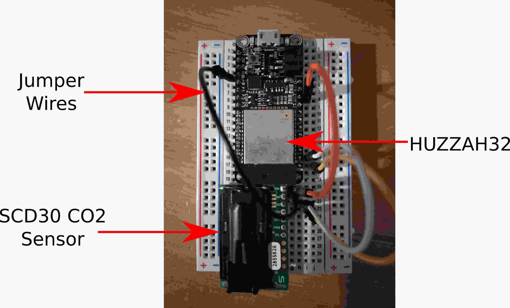
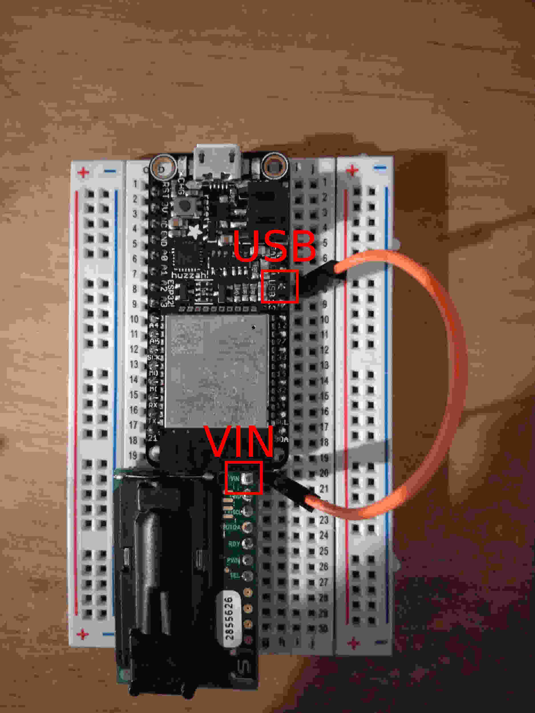
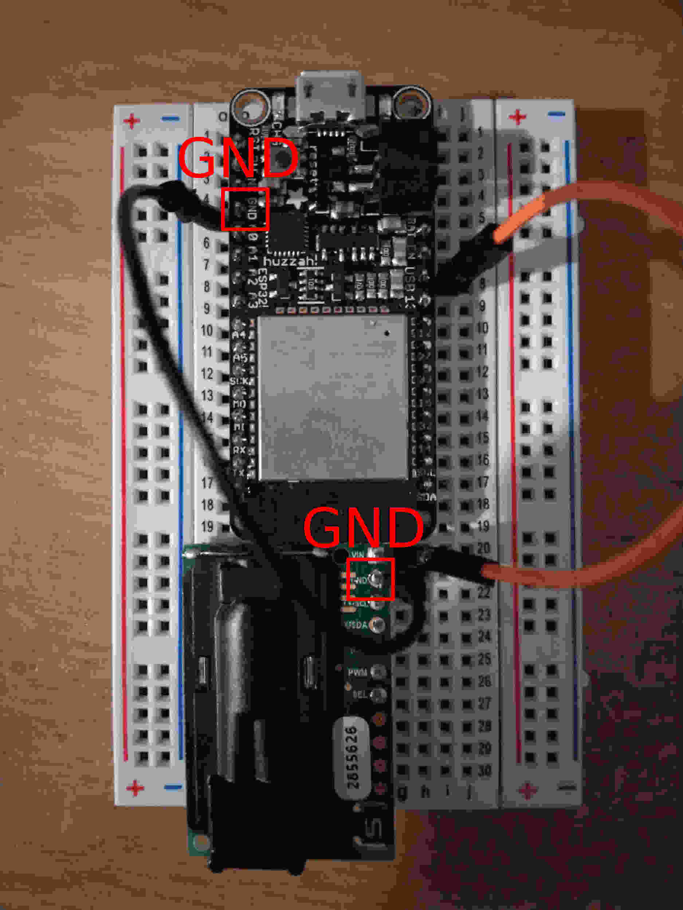
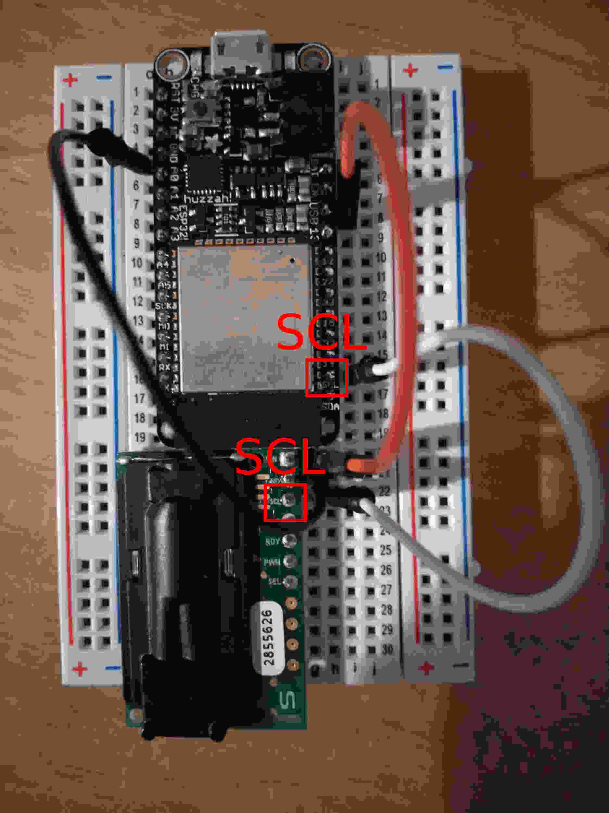
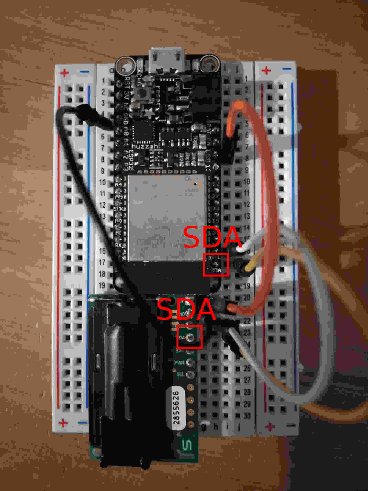
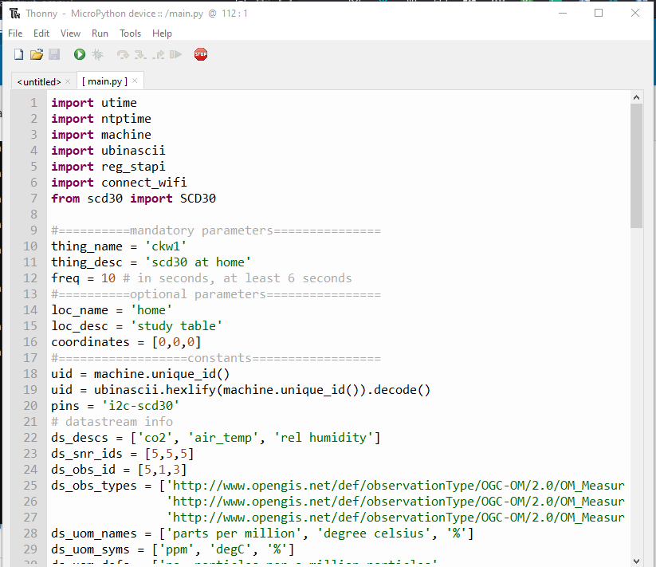
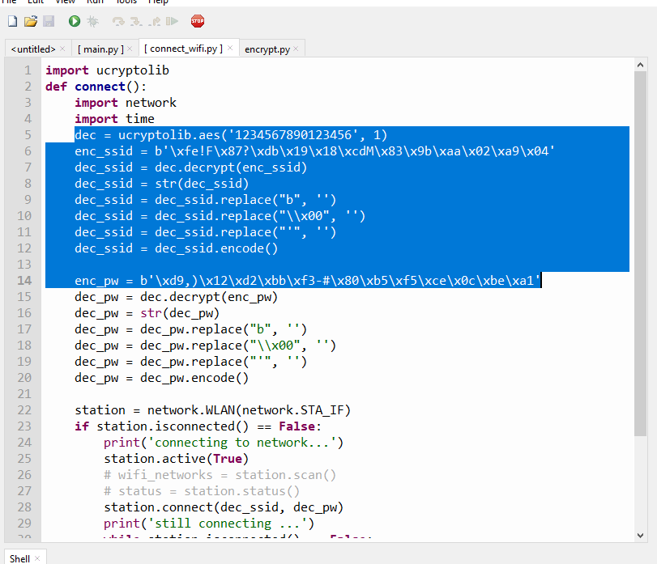

1. Sensirion SCD30 CO2 Sensors with HUZZAH32#
This the sensor we are going to build in this exercise.
{kind=link}

We will need the following hardwares:
HUZZAH32 (Can be bought here)
USB Data Cable
A SCD30 Sensor (Can be bought here)
Jumper Wires x 4 (Can be bought here)
Breadboard (Can be bought here)
Soldering Kit (Can be bought here)
Laptop
Solder the header to your SCD30. Follow similar soldering instructions here.
Connect the HUZZAH32 and SCD30 onto the breadboard as shown in the previous figure. Wire up the Argon and the sensor as follows:
Connect the USB pin of the HUZZAH32 to VIN of the SCD30 sensor.

Connect the Ground (GND) pin of HUZZAH32 to GND of SCD30 sensor.

Connect the HUZZAH32 SCL pin to SCL of the SCD30 sensor.

Connect the HUZZAH32 SDA pin to SDA of the SCD30 sensor.

Refer to Step 1 to 11 of ../02/101esp32_mpython to setup the HUZZAH32 with Micropython.
Download the scd30 scripts from here. Unzip the file.
Upload all the scripts in the scd30 folder onto the HUZZAH32 board.
Use the ampy library to upload files to the board.
$ ampy -p COMx put directory\huzzah32scd30-main\scd30\boot.py $ ampy -p COMx put directory\huzzah32scd30-main\scd30\main.py $ ampy -p COMx put directory\huzzah32scd30-main\scd30\reg_stapi.py $ ampy -p COMx put directory\huzzah32scd30-main\scd30\connect_wifi.py $ ampy -p COMx put directory\huzzah32scd30-main\scd30\webrepl_cfg.py $ ampy -p COMx put directory\huzzah32scd30-main\scd30\scd30.py
Once uploaded you can use Thonny to view and edit the script.
Fill in the mandatory parameters in the main.py script.

Open the connect_wifi.py script. Encrypt your ssid and wifi password following the instruction in Most convenient but lease secure section of ../02/102esp32_secure_mpython. Enter your encrypted password and the 16 digit key into the script.

Open the webrepl_cfg.py script. Enter your encrypted password and the 16 digit key into the script.
Open the reg_stapi.py script.
First fill in the empty url variable in all of the functions. This is the url you are retrieving and posting your sensor results. For chaos_lab you can either post your data to
https://andlchaos300l.princeton.edu:8080/FROST-Server/v1.0/ or http://chaosbox.princeton.edu:8080/FROST-Server/v1.0/
Next, posting data to the database requires user and password authorization. You have to first convert your username and password to base64 encoding. We will be using the Python base64 library. Run this script in a Python environment.
import base64 encoded = base64.b64encode(b'user:password') print(encoded) >>> b'dXNlcjpwYXNzd29yZA=='
Encrypt your base64 username password following the instruction in Most convenient but lease secure section of ../02/102esp32_secure_mpython. Enter your encrypted base64 username and password and the 16 digit key into the script.
The enc_val variable is at line 8
enter the 16 digit key value in all the functions, line 48, 83, 128.
Save all your scripts. Reset the HUZZAH32 and check the Grafana visualization. Look for the Thing and Datastream created in this exercise.
Once everything is working. Compile the scripts with passwords into mpy files and upload them onto the device. Following the instruction in Most convenient but lease secure section of ../02/102esp32_secure_mpython.
Check again to make sure the device are running as expected.
{kind=link}
{kind=link}
{kind=link}
{kind=link}
{kind=link}
{kind=link}